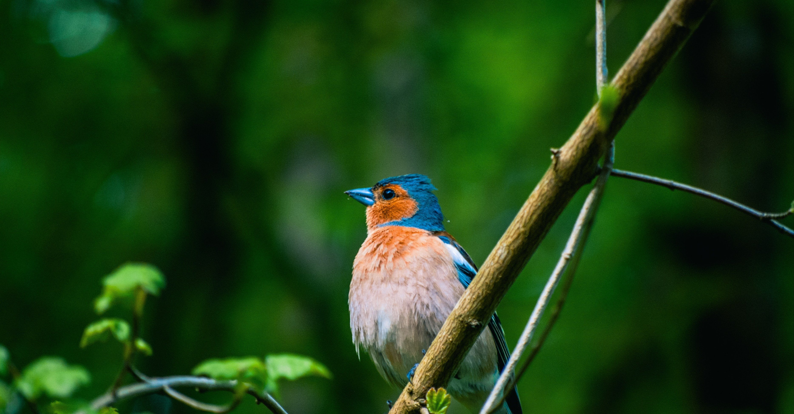

目を瞑っても眠りに落ちない夜。
そんな時、あなたはどうするだろうか。
例えば、体を起こして頭にこびりついて離れないものを片してみたり。
それは、いよいよ明日に控えた大事なプレゼンの準備かもしれないし、無邪気な顔で手を振る週末のスケジュール確認かもしれない。
もしくは空想の世界にふけることも手だろう。
近所に住む猫が突然喋り出し思いがけない会話をした昼下がりや、数千年先に起こるSFチックな未来の物語なんかもいい。
でも僕の場合、そんなことをしたら、ますます眠れなくなってしまいそうだ。
下手したら小さなノートを取り出して、つらつらと退屈なアイデアなんかを書きだしてしまったらどうしようか。
そんな悩める僕を救ってくれたのが「眠れぬ夜に聴く文学」。
Writers Lab “Code W”メンバーのようじろうさんが運営している朗読YouTubeチャンネルだ。
ようじろうさんには、オーディオブック配信サービス・Writoneを通して僕の作品も多く朗読してもらっており、大変お世話になっている。
これがまた、一日の終わりに安らかな時間を運んでくれる素敵な声なのだ。
一言では語り尽くせない魅力を持つその声に、誰もが一度は目にしたことのあるだろう往年の名作を読まれたりなんかしたら、もはや鬼に金棒だ。
ノンレム睡眠へ誘う最良の案内役がYouTubeで聴けるなんて、そんな贅沢があっていいのだろうか。
そういえば本記事を書いている途中、「リラックスする声は、夜に活性化しやすい副交感神経に働きかけて緊張を解いてくれるものなんだよ」と、かつてアナウンサーを目指していた知人の言葉を思い出した。
となれば、真夜中の僕の副交感神経はようじろうさんの声で満たされていると言ってもいいだろう。
最近では、まるで神経の方から「その声を早く聴かせてくれよ」と頼んでくる状態なのだから。
すっかり僕のYouTube再生リストの急上昇に躍り出た「眠れぬ夜に聴く文学」。
ヘビーリスナーになっているからだろうか、眠りへのカウントダウンは日に日に速度を加速させている。
そのスピードにやられ、見事にしくじったこともある。
それは電車内でYouTubeのラジオを聴いていた折、何かの拍子で別動画の再生ボタンが押され僕の耳元にようじろうさんの声が流れたことがあった。
車窓から差し込む夕陽や乗客がまばらな車内、さらには運転士が電車を静かに走行させていたことも関係があったのだろう。
みるみるうちに眠くなり、僕は本来降りるべき駅を通り過ぎてしまったのである。
「ツイてないな」なんてボヤキながら結局見知らぬ駅で降りることになったのだが、ふと駅のホームから見上げた夜空に、偶然流れ星がきらめいたのだ。
それはほんの一瞬の出来事だったが、近頃は前を向くことに必死で夜空や星々を見上げることなんて久しぶりだったから、たったそれだけのことなのにたまらなく嬉しくなってしまった。
恐らく僕にとって、ようじろうさんの朗読は眠りだけでなく、幸せさえも運んでくれる“青い鳥”なのだろう。